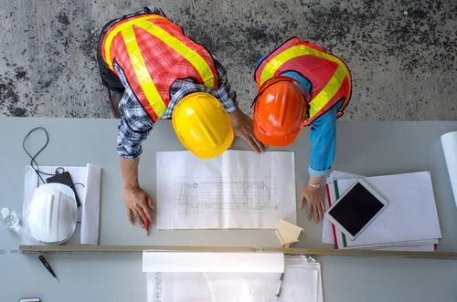
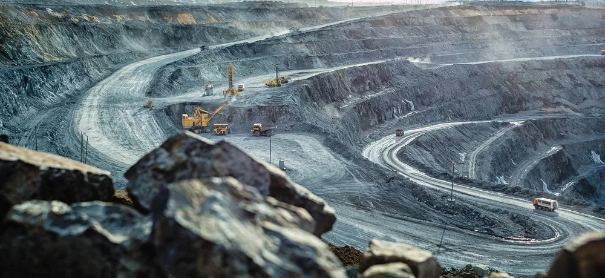

Service Divisions

Municipal & Government Infrastructure Division
- Design and rehabilitation of roads
- Storm water reticulation design
- Urban and rural water supply
- Sewer and pump stations reticulation designs
- Water and waste water treatment plants
- Hospitals, schools, clinics and public health centres civil/structural designs
- Housing developments

Mining & Industrial Infrastructure Division
- Bulk materials handling civil and structural engineering
- Process plants civils and structural design
- Furnace smelter plants civils and structural design
- Water and waste water treatment plants
- Piping and pumping systems designs
- All plant pipe racks
- All mining and industrial equipment foundations
- Mine access roads
- Mine storm water reticulation design and ponds
- Mine housing developments
- Mine sewage reticulation and design
- Mine Structural inspection and maintenance management (SIMM)

Feasibility Studies & EIA
- Civil and structural engineering project investigations into economic viability
- Environmental impact assessment studies (EIA)

Commercial Buildings Infrastructure
- High and low rise buildings design and project management
- Shopping centres and office parks civil and structural engineering services
- Warehouses civil and structural engineering services
- Residential developments civil and structural engineering services

Power & Telecommunications Infrastructure
- Transmission line towers design and project management
- Guyed masts designs
- Lattice towers designs
- Substations designs

Project Management
- Project administration
- Project civil and structural engineering cost budget estimates (CAPEX)
- Project risk assessments and risk management plans
- Design and construction planning
- Project cost control measures
- Project quality management
- Project implementations and closures

Specialised Engineering Services
- Dynamic analysis and design for structures (e.g. ball mill foundations, steel structures for vibrating equipment)
- Structural design of conveyors for bulk materials handling
- Finite element analysis (FEA) for structures
- Design of silos and hoppers structures
Our Approach & Value
Comprehensive Solutions
We deliver end-to-end engineering services, from feasibility to project close-out, tailored to your sector and needs.
Professional Expertise
All our project managers and engineers are registered professionals, ensuring the highest standards and best practices.
Client Partnership
We provide continuous support, transparent communication, and true partnership throughout your project journey.
Quality & Safety
We uphold the highest quality and safety standards, complying with all regulations and client-specific requirements.
Cost & Time Efficiency
Our integrated approach ensures value for money, timely delivery, and cost-effective solutions for every client.